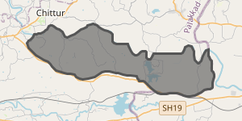

Geographical Location
Perumatty, Palakkad district, Kerala
 Government of Kerala
Government of Kerala

Explore the geographical setting, local resources and spatial information of Perumatty Grama Panchayat through an integrated digital mapping platform.
Perumatty, Palakkad district, Kerala
Explore geographic information through maps
Visualise local features and resources
Access geographic information online
Perumatty Grama Panchayat is located in Palakkad district, Kerala. Understanding its geographical setting and distribution of local resources is important for spatial planning and local-level development.
This WebGIS portal brings together geographic information, interactive mapping and resource visualisation to help users explore the area through a digital interface.
View the Panchayat's location map and explore its wider geographical context.
Perumatty is a Grama Panchayat in Palakkad district in the state of Kerala, India. Its geographical location provides the context for local resource mapping and spatial analysis.
The location map displayed here can be used alongside the interactive map to understand the area's spatial setting.
Open Interactive Map ↗
Navigate the map, zoom into locations and switch between available background layers.
Note: This is a general reference map. The marker and initial extent are illustrative and do not represent a verified Panchayat boundary. Use authoritative coordinates and boundary data for official mapping.
Access the published Perumatty WebGIS resource map and explore its available geographic layers.
If the map does not load inside this page, use the button above to open it directly. Some websites do not permit iframe embedding.
Use this platform to access spatial information and explore the geographical characteristics of Perumatty.
Explore a digital map using zoom, pan and background-layer controls to understand the local geographical setting.
Explore map →View the location map and understand the Panchayat's position within the wider district context.
View location →Open the linked resource mapping platform to explore the geographic layers provided by the published WebGIS.
View resources →Start exploring the maps and geographic resources available through this digital platform.